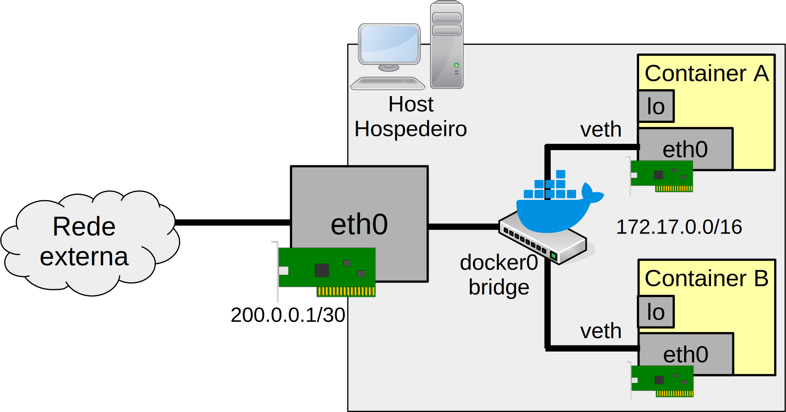

Rede Docker
O modelo de rede utilizado pelo Docker parece inicialmente mágica, pois é só ligar um container, que este vai estar conectado à rede e provavelmente à Internet.

A rede padrão Docker vai dar acesso à qualquer rede que o host hospedeiro estiver conectado, inclusive à Internet. Todavia, é importante perceber que o container não vai acessar, por exemplo a Internet, se o host hospedeiro não tiver acesso a mesma.
No geral, a maioria das pessoas não vão precisar alterar as configurações padrão das redes Docker, mas para o administrador é bom saber como funciona a rede Docker, pois existem casos em que será necessário alterar tal rede para atender os requisitos do cliente.
Normalmente a rede Docker funciona através de uma placa rede virtual no
modo bridge (Linux network bridge), tal placa virtual é geralmente
identificada no host hospedeiro como sendo a placa de rede chamada de
docker0. Tal placa de rede normalmente estará provavelmente com uma
faixa de rede como: 172.17.0.0/16, ou alguma rede privada similar. A
Figura 12 mostra mais ou menos como é a arquitetura de uma rede Docker.

Analisando a Figura 12, observe que o host hospedeiro possui uma placa
de rede que lhe conecta ao mundo externo, neste caso ela é representada
pelo eth0 com o IP 200.0.0.1, mas poderiam haver mais placas de redes
no hospedeiro. Interligada à essa placa de rede física, temos a bridge
Docker, chamada de docker0. Tal bridge está conectada às placas de
rede Ethernets virtuais, chamadas de veth, que por sua vez estão
ligadas às placas de redes eth0, que estão dentro do container. No
cenário da Figura 12, a rede Docker tem o IP de rede 172.17.0.0/16,
dentro dessa faixa, cada placa de rede do container receberá um IP, tal
como: docker0 - 172.17.0.1, eth0 do container A 172.17.0.2, eth0
do container B 172.17.0.3.
Para entender melhor tal estrutura vamos ver a saída do comando
ifconfig do host hospedeiro:
$ ifconfig
...
wlp3s0: flags=4163<UP,BROADCAST,RUNNING,MULTICAST> mtu 1500
inet 192.168.1.39 netmask 255.255.255.0 broadcast 192.168.1.255
inet6 fd1b:e114:982d:0:178e:95e1:9108:a880 prefixlen 64 scopeid 0x0<global>
inet6 fe80::5b45:9e7d:f26a:f155 prefixlen 64 scopeid 0x20<link>
inet6 fd1b:e114:982d::bd6 prefixlen 128 scopeid 0x0<global>
ether 60:57:18:f1:b7:01 txqueuelen 1000 (Ethernet)
RX packets 1079884 bytes 968144506 (923.2 MiB)
RX errors 0 dropped 9443 overruns 0 frame 0
TX packets 649598 bytes 243084853 (231.8 MiB)
TX errors 0 dropped 0 overruns 0 carrier 0 collisions 0
docker0: flags=4163<UP,BROADCAST,RUNNING,MULTICAST> mtu 1500
inet 172.17.0.1 netmask 255.255.0.0 broadcast 172.17.255.255
inet6 fe80::42:adff:fe35:6161 prefixlen 64 scopeid 0x20<link>
ether 02:42:ad:35:61:61 txqueuelen 0 (Ethernet)
RX packets 6195 bytes 490719 (479.2 KiB)
RX errors 0 dropped 0 overruns 0 frame 0
TX packets 9009 bytes 11484489 (10.9 MiB)
TX errors 0 dropped 0 overruns 0 carrier 0 collisions 0
veth2252825: flags=4163<UP,BROADCAST,RUNNING,MULTICAST> mtu 1500
inet6 fe80::2cd3:1fff:fe81:c076 prefixlen 64 scopeid 0x20<link>
ether 2e:d3:1f:81:c0:76 txqueuelen 0 (Ethernet)
RX packets 314 bytes 67348 (65.7 KiB)
RX errors 0 dropped 0 overruns 0 frame 0
TX packets 1297 bytes 276751 (270.2 KiB)
TX errors 0 dropped 0 overruns 0 carrier 0 collisions 0
vetha7892f9: flags=4163<UP,BROADCAST,RUNNING,MULTICAST> mtu 1500
inet6 fe80::78b1:b0ff:fe8d:906e prefixlen 64 scopeid 0x20<link>
ether 7a:b1:b0:8d:90:6e txqueuelen 0 (Ethernet)
RX packets 947 bytes 108441 (105.8 KiB)
RX errors 0 dropped 0 overruns 0 frame 0
TX packets 1752 bytes 3220046 (3.0 MiB)
TX errors 0 dropped 0 overruns 0 carrier 0 collisions 0
Na saída do host anterior, no lugar da eth0 temos a wlp3s0, que é
a placa física que dá acesso a outras redes, tai como a Internet. A
placa de rede docker0 com o IP 172.17.0.1, que simboliza a bridge
Docker. Também temos duas placas veth, que são: veth2252825 e
vetha7892f9, tais placas não possuem IPs, pois os IPs são atribuídos
às placas de rede que estão dentro do container (neste caso temos dois
containers em execução), similar à Figura 12.
As placas de rede veth e sua relação com a docker0 podem ser melhor
vistas com o comando brctl, tal como:
$ brctl show
bridge name bridge id STP enabled interfaces
docker0 8000.0242ad356161 no veth2252825
vetha7892f9
Assim, quando um container é criando, o Docker cria uma placa veth e
relaciona essa com a docker0, feito isso é dado ao container um IP
dentro da faixa de rede utilizada pela rede Docker, bem como é inserido
no container o IP do gateway padrão e do servidor DNS. Ao fim, o
container terá capacidade de acessar outras redes - é claro se o host
hospedeiro tiver acesso a outras redes, tal como a Internet.
É importante saber, que para um container acessar outras redes, o host
hospedeiro deve funcionar como um roteador, ou seja o arquivo
/proc/sys/net/ipv4/ip_forward deve estar com o conteúdo 1. Também, o
host hospedeiro utilizará o iptables para realizar um NAT dos
pacotes que forem roteados para fora da rede Docker. Essas duas
configurações normalmente serão feitas automaticamente pelo host
Docker.
Por padrão, todo container pode se comunicar com outro container, mas
isso pode ser alterado na inicialização do Docker, configurando a opção
--icc em como falso, tal como: --icc=false.
Agora que conhecemos um pouco mais a respeito de como funciona a rede Docker, a seguir serão apresentadas algumas características extras da configuração de rede no Docker.
Descobrindo os IPs, rotas e DNS dos containers
Há várias formas de descobrir IPs de containers, algumas dessas são apresentadas nas subseções a seguir.
Utilizando o inspect
Com o inspect do Docker é possível procurar no JSON pelas
configurações de redes e chegar no IP, tal como:
$ docker inspect --format '' server1 172.17.0.2
Estamos utilizando os containers criados na seção anterior.
Utilizando o exec
Utilizando o exec seguido de algum comando Linux (o comando deve estar
presente no container), tal como:
- Verificando o arquivo
/etc/hosts:
$ docker exec -ti server1 cat /etc/hosts
127.0.0.1 localhost
...
172.17.0.2 dd0de51f4289
- Utilizando comandos do container para ver IP, tal como
ipeifconfig:
$ docker exec -ti server1 ip addres
- Executando um terminal e executando comandos diretamente no container:
$ docker exec -ti server1 bash
[root@dd0de51f4289 /]#ifconfig
eth0: flags=4163<UP,BROADCAST,RUNNING,MULTICAST> mtu 1500
inet 172.17.0.2 netmask 255.255.0.0 broadcast 172.17.255.255
ether 02:42:ac:11:00:02 txqueuelen 0 (Ethernet)
RX packets 271 bytes 53964 (52.6 KiB)
RX errors 0 dropped 0 overruns 0 frame 0
TX packets 0 bytes 0 (0.0 B)
TX errors 0 dropped 0 overruns 0 carrier 0 collisions 0
lo: flags=73<UP,LOOPBACK,RUNNING> mtu 65536
inet 127.0.0.1 netmask 255.0.0.0
inet6 ::1 prefixlen 128 scopeid 0x10<host>
loop txqueuelen 1000 (Local Loopback)
RX packets 0 bytes 0 (0.0 B)
RX errors 0 dropped 0 overruns 0 frame 0
TX packets 0 bytes 0 (0.0 B)
TX errors 0 dropped 0 overruns 0 carrier 0 collisions 0
Para descobrir as rotas utilizadas pelo container, é possível executar
via exec o comando route ou ip route, tal como:
$ docker exec server1 route -n
Kernel IP routing table
Destination Gateway Genmask Flags Metric Ref Use Iface
0.0.0.0 172.17.0.1 0.0.0.0 UG 0 0 0 eth0
172.17.0.0 0.0.0.0 255.255.0.0 U 0 0 0 eth0
Já para identificar a configuração de servidor DNS utilizado pelo
container, também é possível realizar um exec, só que executando um
cat /etc/resolv.conf, tal como:
$ docker exec server1 cat /etc/resolv.conf
nameserver 192.168.1.1
Utilizando o nsenter
Outra ferramenta bem útil para ver IPs dos containers, bem como realizar
interações em containers é o nsenter, na verdade á mais recomendável
utilizar ela do que o exec. Veja a seguir como utilizar o nsenter
para ver as informações de rede do container. Neste caso primeiro é
necessário encontrar o PID do processo, isso pode ser feito da seguinte
forma:
$ docker inspect -f '' server1
18522
No caso o valor retornado foi 18522, agora podemos utilizar esse PID
com o nsenter e verificar/alterar informações a respeito do
namespace utilizado pelo container, tal como ver a configuração de
rede:
$ sudo nsenter -t 18522 --net ip address
1: lo: <LOOPBACK,UP,LOWER_UP> mtu 65536 qdisc noqueue state UNKNOWN group default qlen 1000
link/loopback 00:00:00:00:00:00 brd 00:00:00:00:00:00
inet 127.0.0.1/8 scope host lo
valid_lft forever preferred_lft forever
inet6 ::1/128 scope host proto kernel_lo
valid_lft forever preferred_lft forever
76: eth0@if77: <BROADCAST,MULTICAST,UP,LOWER_UP> mtu 1500 qdisc noqueue state UP group default
link/ether 02:42:ac:11:00:02 brd ff:ff:ff:ff:ff:ff link-netnsid 0
inet 172.17.0.2/16 brd 172.17.255.255 scope global eth0
valid_lft forever preferred_lft forever

O nsenter permite executar comando que estão no
host hospedeiro e não estão no container. Por exemplo, o
comando ip não está instalado no container, mas está
instalado no host hospedeiro, então esse será executado do
hospedeiro no namespace do container, e por isso o comando
funcionará. Por isso, é bem interessante que o administrador pesquise e
saiba como utilizar o nsenter.
Descobrindo portas publicadas ou abertas nos containers
A Seção 4.4 já apresentou como mostrar portas disponíveis em container, mas aqui são apresentadas mais algumas:
docker ps:
$ docker ps
CONTAINER ID IMAGE COMMAND CREATED STATUS PORTS NAMES
dd0de51f4289 servidor/http "/sbin/startServer.sh" 12 hours ago Up 12 hours 0.0.0.0:82->8080/tcp, :::82->8080/tcp server1
- Executando
iptablesno host hospedeiro:
$ sudo iptables -L -n -t nat
...
Chain DOCKER (2 references)
target prot opt source destination
RETURN 0 -- 0.0.0.0/0 0.0.0.0/0
DNAT 6 -- 0.0.0.0/0 0.0.0.0/0 tcp dpt:82 to:172.17.0.2:8080
- Procurando com o comando
psno host hospedeiro:
$ ps -ef | grep docker-proxy
root 18474 773 0 Sep17 ? 00:00:00 /usr/bin/docker-proxy -proto tcp -host-ip 0.0.0.0 -host-port 82 -container-ip 172.17.0.2 -container-port 8080
root 18481 773 0 Sep17 ? 00:00:00 /usr/bin/docker-proxy -proto tcp -host-ip :: -host-port 82 -container-ip 172.17.0.2 -container-port 8080
luiz 20905 5325 0 11:25 pts/1 00:00:00 grep docker-proxy
- Inspecionando:
$ docker inspect --format '' server1
map[8080/tcp:[{ 82}]]
- Verificando os serviços de rede disponíveis no container com o
netstatouss:
$ docker exec server1 netstat -a --tcp -np
Active Internet connections (servers and established)
Proto Recv-Q Send-Q Local Address Foreign Address State PID/Program name
tcp 0 0 0.0.0.0:8080 0.0.0.0:* LISTEN 8/httpd
tcp 0 0 0.0.0.0:22 0.0.0.0:* LISTEN 9/sshd: /sbin/sshd
tcp6 0 0 :::22 :::* LISTEN 9/sshd: /sbin/sshd
Testando a conectividade entre containers
Há várias formas para se testar a conectividade. Po exemplo, dá para
utilizar o exec para executar comandos como o ping, mas a seguir
vamos executar um bash, instalar o ping e realizar o teste de dentro
do container:
[luiz@fielDell env]$ docker exec -ti server2 bash
...
[root@05eaec227a5f /]# dnf install iputils
...
Installed:
iputils-20240117-4.fc40.x86_64
Complete!
...
[root@05eaec227a5f /]# ping 172.17.0.2
PING 172.17.0.2 (172.17.0.2) 56(84) bytes of data.
64 bytes from 172.17.0.2: icmp_seq=1 ttl=64 time=0.070 ms
64 bytes from 172.17.0.2: icmp_seq=2 ttl=64 time=0.071 ms
64 bytes from 172.17.0.2: icmp_seq=3 ttl=64 time=0.061 ms
64 bytes from 172.17.0.2: icmp_seq=4 ttl=64 time=0.106 ms
64 bytes from 172.17.0.2: icmp_seq=5 ttl=64 time=0.056 ms
Também seria possível utilizar o telnet para analisar várias portas,
dentre outros softwares.
Criando container sem interface de rede
Pode haver algum caso, que por motivos de segurança (por exemplo), não
seja recomendável que um container esteja conectado aos outros
containers, nem ao host hospedeiro via rede. Se esse for o caso, é
possível iniciar um container sem placa de rede, com a opção
--net=none.
$ docker run --rm --name server3 --net=none -d servidor/http
d94ab3172c6203dd62a50badda25b6332dcb62aee1c19632bd4d6296cbf34d0c
...
$ docker exec -ti server3 bash
...
[root@d94ab3172c62 /]# ifconfig
lo: flags=73<UP,LOOPBACK,RUNNING> mtu 65536
inet 127.0.0.1 netmask 255.0.0.0
inet6 ::1 prefixlen 128 scopeid 0x10<host>
loop txqueuelen 1000 (Local Loopback)
RX packets 0 bytes 0 (0.0 B)
RX errors 0 dropped 0 overruns 0 frame 0
TX packets 0 bytes 0 (0.0 B)
TX errors 0 dropped 0 overruns 0 carrier 0 collisions 0
Tal container só tem a interface de rede de loopback para comunicação inter-processos.
Configurando container para acessar o mesmo espaço de rede do host
A opção --net=host criará um container que compartilhará as mesmas
placas de rede e configuração de rede do host hospedeiro. Veja o
exemplo a seguir:
[luiz@fielDell env]$ docker run --rm --name server4 --net=host -d servidor/http
d6785b003d38b389fc37ed4da5794c49c46308c8bd4284202bf37a94b42d1e45
[luiz@fielDell env]$ docker exec -ti server4 bash
[root@fielDell /]# ifconfig
docker0: flags=4163<UP,BROADCAST,RUNNING,MULTICAST> mtu 1500
inet 172.17.0.1 netmask 255.255.0.0 broadcast 172.17.255.255
inet6 fe80::42:adff:fe35:6161 prefixlen 64 scopeid 0x20<link>
ether 02:42:ad:35:61:61 txqueuelen 0 (Ethernet)
RX packets 6195 bytes 490719 (479.2 KiB)
RX errors 0 dropped 0 overruns 0 frame 0
TX packets 9141 bytes 11515305 (10.9 MiB)
TX errors 0 dropped 0 overruns 0 carrier 0 collisions 0
veth2252825: flags=4163<UP,BROADCAST,RUNNING,MULTICAST> mtu 1500
inet6 fe80::2cd3:1fff:fe81:c076 prefixlen 64 scopeid 0x20<link>
ether 2e:d3:1f:81:c0:76 txqueuelen 0 (Ethernet)
RX packets 314 bytes 67348 (65.7 KiB)
RX errors 0 dropped 0 overruns 0 frame 0
TX packets 1429 bytes 307567 (300.3 KiB)
TX errors 0 dropped 0 overruns 0 carrier 0 collisions 0
vetha7892f9: flags=4163<UP,BROADCAST,RUNNING,MULTICAST> mtu 1500
inet6 fe80::78b1:b0ff:fe8d:906e prefixlen 64 scopeid 0x20<link>
ether 7a:b1:b0:8d:90:6e txqueuelen 0 (Ethernet)
RX packets 947 bytes 108441 (105.8 KiB)
RX errors 0 dropped 0 overruns 0 frame 0
TX packets 1884 bytes 3250862 (3.1 MiB)
TX errors 0 dropped 0 overruns 0 carrier 0 collisions 0
wlp3s0: flags=4163<UP,BROADCAST,RUNNING,MULTICAST> mtu 1500
inet 192.168.1.39 netmask 255.255.255.0 broadcast 192.168.1.255
inet6 fd1b:e114:982d:0:178e:95e1:9108:a880 prefixlen 64 scopeid 0x0<global>
inet6 fe80::5b45:9e7d:f26a:f155 prefixlen 64 scopeid 0x20<link>
inet6 fd1b:e114:982d::bd6 prefixlen 128 scopeid 0x0<global>
ether 60:57:18:f1:b7:01 txqueuelen 1000 (Ethernet)
RX packets 1295958 bytes 1217138862 (1.1 GiB)
RX errors 0 dropped 10030 overruns 0 frame 0
TX packets 738018 bytes 275237945 (262.4 MiB)
TX errors 0 dropped 0 overruns 0 carrier 0 collisions 0
Essa opção é interessante quando é preciso expor todos os serviços do
container para a rede externa. Todavia utilizar o --net=host é
extremamente perigoso, por isso não é aconselhável tal prática.
Criando redes Docker
Por padrão o Docker tem uma rede e essa vai atender a maioria dos casos. Entretanto podem existir momentos em que é necessário uma nova rede, para por exemplo por motivo de segurança isolar um conjunto de containers de outros, etc.
Para criar uma rede docker, podemos utilizar o docker network create
seguido do nome da nova rede, tal como:
$ docker network create redeDocker
fd6c1bc932edcfc648c1fc23fddc6aa119de345832eeeae7675670ba46051d24
Com o comando anterior, foi criada uma rede chamada redeDocker. É
possível ver mais detalhes dessa rede com o comando a seguir:
$ docker network inspect redeDocker
[
{
"Name": "redeDocker",
"Id": "fd6c1bc932edcfc648c1fc23fddc6aa119de345832 eeeae7675670ba46051d24",
"Created": "2024-09-19T00:33:00.563334541-03:00",
"Scope": "local",
"Driver": "bridge",
"EnableIPv6": false,
"IPAM": {
"Driver": "default",
"Options": {},
"Config": [
{
"Subnet": "172.18.0.0/16",
"Gateway": "172.18.0.1"
}
]
},
"Internal": false,
"Attachable": false,
"Ingress": false,
"ConfigFrom": {
"Network": ""
},
"ConfigOnly": false,
"Containers": {},
"Options": {},
"Labels": {}
}
]
Na saída anterior, observe que essa rede tem o IP 172.18.0.0/26 e o
gateway, que o host hospedeiro, tem o IP 172.18.0.1. Também é
possível ver essa nova rede com o comando docker network ls, veja a
seguir:
$ docker network ls
NETWORK ID NAME DRIVER SCOPE
a972fdc75f55 bridge bridge local
00332d429033 host host local
d91b8da1f7fd none null local
fd6c1bc932ed redeDocker bridge local
Observe que na listagem anterior, temos os seguintes nomes de redes:
bridge: que é a rede padrão do Docker;host: que quando o docker utiliza essa rede, ele na verdade vai utilizar o espaço de rede do host hospedeiro, ou seja, é a rede utilizada pela opção--net=host;none: Utilizado para configurar um container sem rede, tal como já foi feito com a opção--net=none;
Observe também os drivers da listagem anterior, eles refletem a função de cada rede. Também é possível instalar e utilizar outros drivers e obter redes diferentes, por exemplo.
Com a rede redeDocker, vamos criar também um container e conectá-lo à
essa nova rede, tal como:
$ docker run --rm --name server5 --net=redeDocker -d servidor/http
01f5a381460211fd40121dc166b40e873727c538b6b82a214924c2c60a91fc36
Com o container criado vamos verificar se ele realmente está na rede
172.18.0.0/16, que foi a faixa de IPs determinada para a rede
redeDocker.
[luiz@fielDell env]$ docker exec -ti server5 bash
[root@01f5a3814602 /]# ifconfig
eth0: flags=4163<UP,BROADCAST,RUNNING,MULTICAST> mtu 1500
inet 172.18.0.2 netmask 255.255.0.0 broadcast 172.18.255.255
ether 02:42:ac:12:00:02 txqueuelen 0 (Ethernet)
RX packets 27 bytes 2978 (2.9 KiB)
RX errors 0 dropped 0 overruns 0 frame 0
TX packets 0 bytes 0 (0.0 B)
TX errors 0 dropped 0 overruns 0 carrier 0 collisions 0
Bem, por padrão uma rede Docker não tem permissão de acessar outra rede
Docker, isso é definido via iptables. Vamos verificar esse
comportamento executando um ping do server5 para o server1, tal
como:
[root@01f5a3814602 /]# dnf install iputils
...
[root@01f5a3814602 /]# ping 172.17.0.2
PING 172.17.0.2 (172.17.0.2) 56(84) bytes of data.
^C
--- 172.17.0.2 ping statistics ---
79 packets transmitted, 0 received, 100% packet loss, time 79037ms
Note que foi necessário instalar o iputlis para utilizar
o comando ping, através do pacote iputils.
A saída anterior, mostra que não há conectividade entre o container da
rede Docker padrão, com o container da nova rede que acabamos de criar,
já que o ping entre o server5 e o server1 não obteve resposta.
Verificando os containers conectados a uma rede Docker
Agora que temos, por exemplo, o container server5 conectado à
redeDocker, é possível ver IP e MAC do container relacionado com a sua
bridge:
$ docker network inspect redeDocker
[
{
"Name": "redeDocker",
...
"Containers": {
"01f5a381460211fd40121dc166b40e873727c538b6b82 a214924c2c60a91fc36": {
"Name": "server5",
"EndpointID": "bda77742a8425aee8b0d19a13c325 e692100462f73250eba0125364656285779",
"MacAddress": "02:42:ac:12:00:02",
"IPv4Address": "172.18.0.2/16",
"IPv6Address": ""
}
},
"Options": {},
"Labels": {}
}
]
Então o comando anterior, pode ser utilizado para descobrir os containers relacionados com cada rede Docker, bem como os IPs desses containers.
Conectando um container em execução à uma rede Docker
Outra tarefa que pode ser útil, é conectar um container já em execução à
outra rede Docker. Por exemplo, vamos conectar o server2, que está na
rede padrão Docker à redeDocker, que criamos anteriormente. Para isso
basta executar o seguinte comando:
$ docker network connect redeDocker server2
Agora vamos verificar se esse container está na rede redeDocker:
$ docker exec -ti server2 bash
[root@05eaec227a5f /]# ifconfig
eth0: flags=4163<UP,BROADCAST,RUNNING,MULTICAST> mtu 1500
inet 172.17.0.3 netmask 255.255.0.0 broadcast 172.17.255.255
ether 02:42:ac:11:00:03 txqueuelen 0 (Ethernet)
RX packets 2024 bytes 3281494 (3.1 MiB)
RX errors 0 dropped 0 overruns 0 frame 0
TX packets 947 bytes 108441 (105.8 KiB)
TX errors 0 dropped 0 overruns 0 carrier 0 collisions 0
eth1: flags=4163<UP,BROADCAST,RUNNING,MULTICAST> mtu 1500
inet 172.18.0.3 netmask 255.255.0.0 broadcast 172.18.255.255
ether 02:42:ac:12:00:03 txqueuelen 0 (Ethernet)
RX packets 19 bytes 2042 (1.9 KiB)
RX errors 0 dropped 0 overruns 0 frame 0
TX packets 0 bytes 0 (0.0 B)
TX errors 0 dropped 0 overruns 0 carrier 0 collisions 0
...
A saída anterior, mostra que o server5 agora está conectado à rede
redeDocker pela interface eth1, bem como continua conectado à rede
padrão do Docker, pela interface eth0. Note que isso abre várias
possibilidades, tal como um container que pode prover serviço para mais
que uma rede Docker.
Bibliografia
TURBULL, James. The Docker Book: Containerization is the New Virtualization. [s.l.]: James Turnbull, 2014.